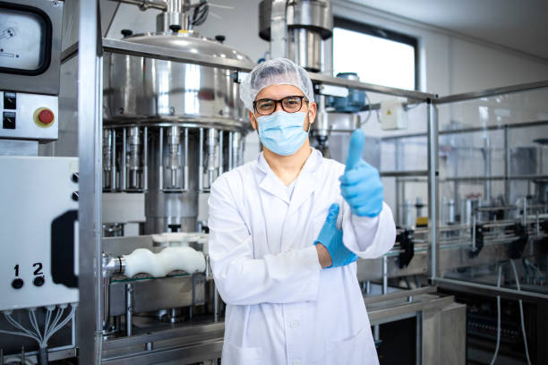

|  |
Scientist: Dr. Ahmed Ali, Research Scientist at PharmaVital
Project Goal: Develop a new, more effective antidepressant medication with fewer
side effects than current options.
Project Activities:
Target Identification: Dr. Ahmad began by researching the neurochemical pathways involved
in depression. He identified a specific receptor in the brain that plays a role in regulating mood.
This receptor became the target for the new medication.
Compound Screening: Using a combination of computational modeling and high-throughput
screening techniques, Dr. Ahmed and his team evaluated a vast library of potential drug candidates.
This stage involved testing thousands of compounds to see if they interacted with the target receptor
in a desired way.
Preclinical Testing: The most promising candidate drugs were then tested in animal models of
depression. These studies assessed their effectiveness in improving depressive symptoms and
compared them to existing medications.
Safety and Efficacy Studies (if successful): If the preclinical studies were positive,
Dr. Ahmed would work with a team to design and conduct clinical trials in human patients.
These trials would involve rigorous testing to determine the medication's safety, efficacy,
and optimal dosage in humans.
Project Outcomes (Possible Scenarios):
Success: Dr. Ahmed's research could lead to the development of a new, more effective
antidepressant medication with fewer side effects. This would be a significant breakthrough
in the treatment of depression, offering relief to millions of people worldwide. PharmCo
could then pursue regulatory approval and commercialization of the drug.
Challenges: Unfortunately, drug development is a high-risk process with a high rate of
failure. There is a possibility that the promising candidate drugs don't perform well in
preclinical or clinical trials, leading to the project being halted.